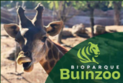

<ion-content class="content-bg">
  <div class="nav">
    <!-- Logo del Bioparque -->
    <div class="top-image-container">
      
    </div>

  </div>
  <!-- Botones principales (Bioparque, Informaciones) -->
  <div class="button-container">
    <ion-button expand="block" class="custom-button" fill="clear" (click)="reenviar()" [routerLink]="['/adulto/inicio']">
      
    </ion-button>

    <ion-button expand="block" class="custom-button" fill="clear" [routerLink]="['/informacion']">
      
    </ion-button>
  </div>
</ion-content>
